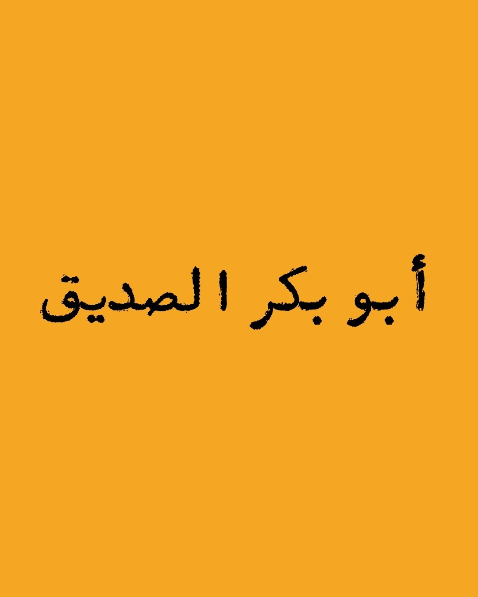
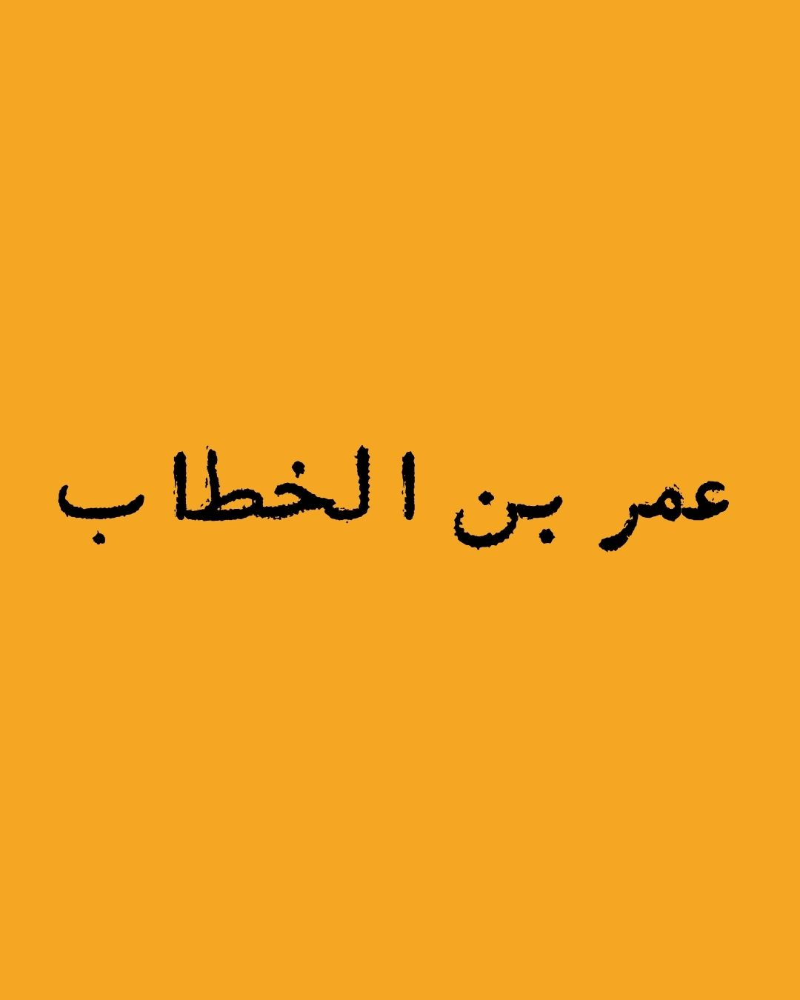
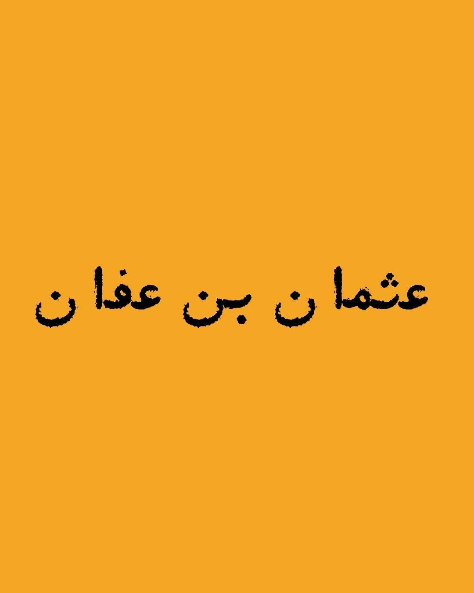
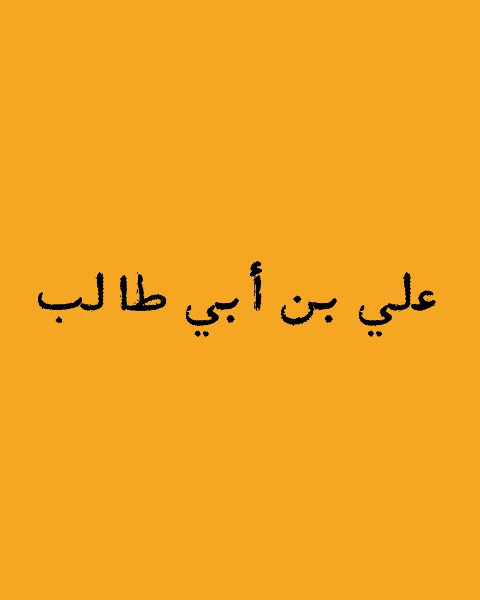

Daftar Kisah Para Sahabat Rasulullah
Yuk, kenalan dengan para sahabat Rasulullah ﷺ. Pilih satu kisah dan temukan pelajaran hidup yang relevan sampai sekarang.
Yuk, kenalan dengan para sahabat Rasulullah ﷺ. Pilih satu kisah dan temukan pelajaran hidup yang relevan sampai sekarang.

Sahabat pertama yang memeluk Islam dan teman setia Rasulullah ﷺ dalam hijrah.
Lihat Kisah


Sahabat tidak ditemukan. Coba kata kunci lain, ya.